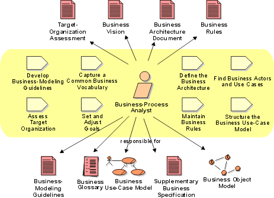

Role:
Business-Process Analyst
The business-process analyst leads and coordinates business use-case
modeling by outlining and delimiting the organization being modeled; for
example, establishing what business actors and business use cases exist
and how they interact. The business process analyst is responsible for
the business architecture. He/she is shown below as responsible for Artifact:
Business Object Model because of this overall architectural responsibility,
even though Role: Business Designer creates
and maintains it.

Staffing 
A person acting as business-process analyst must be a good facilitator and
have excellent communication skills. Knowledge of the business domain is
essential to have for those acting in this role, however, it's not necessary for
everyone.
A business-process analyst is prepared to:
- Assess the situation of the target organization where the project's
end-product will be deployed.
- Understand customer and user requirements, their strategies, and their
goals.
- Facilitate modeling of the target organization.
- Discuss and facilitate a business
engineering effort, if needed.
- Perform a cost/benefit analysis for any suggested changes in the target
organization.
- Discuss and support those who market and sell the end-product of the
project.
Copyright
© 1987 - 2001 Rational Software Corporation
|  Roles and Activities >
Roles and Activities >
 Business-Process Analyst
Business-Process Analyst